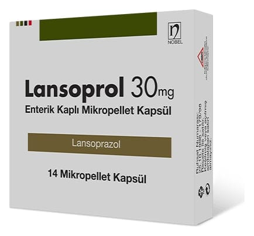

Lansoprol 30 mg Enterik Kaplı Mikropellet Kapsül, 14 Adet

Ne için kullanılır
KT · Bölüm 1• LANSOPROL, lansoprazol etkin maddesini içerir. Bir kapsül içinde 30 mg etkin madde bulunur. Lansoprazol, proton pompası inhibitörü olarak sınıflandırılan ilaç grubuna dahildir. Proton pompası inhibitörleri mide tarafından salgılanan asit miktarını düşürür. • LANSOPROL 30 mg Mikropellet Kapsül, koyu yeşil opak / açık oranj opak no:1 sert jelatin kapsüller içinde bağırsakta açılan beyaz, bejimsi-beyaz renkli küresel mikropelletler içerir. LANSOPROL 14 ve 28 kapsül içeren kutularda kullanıma sunulmuştur. Kapsüldeki jelatin sığır kaynaklıdır. • LANSOPROL, midedeki asit salgılayan hücrelerden asit salgılanmasını engelleyerek etki gösterir. • Duodenal (oniki parmak barsağı) ve mide ülserlerinin engellenmesi ve tedavisinde,
• Yemek borusu iltihabının (reflü özofajit) tedavisinde, • Midede ve on iki parmak bağırsağında ülser oluşumundan sorumlu tutulan Helicobacter pylori enfeksiyonundan kaynaklanan ülser tedavisinde, • Steroid olmayan yangı giderici ilaçların (aspirin, ibuprofen, ketoprofen ve piroksikam gibi) neden olduğu ülserlerin engellenmesi ve tedavisinde, • Gastroözofageal reflü hastalığında (bu hastalıkta mide asidi yemek borusuna kaçarak hasara ve iltihaplanmaya sebep olur), • Yemek borusundaki aside bağlı hasarın (eroziv özofajit) tedavisinde, • Midedeki aşırı asit salgılanmasının engellenmesinde (Zollinger-Ellison Sendromu dahil patolojik hipersekresyon durumları) kullanılmaktadır.